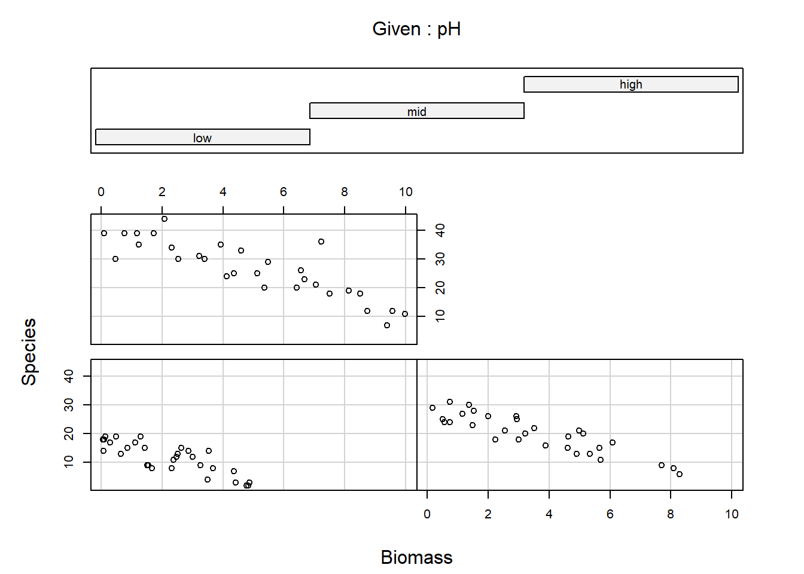
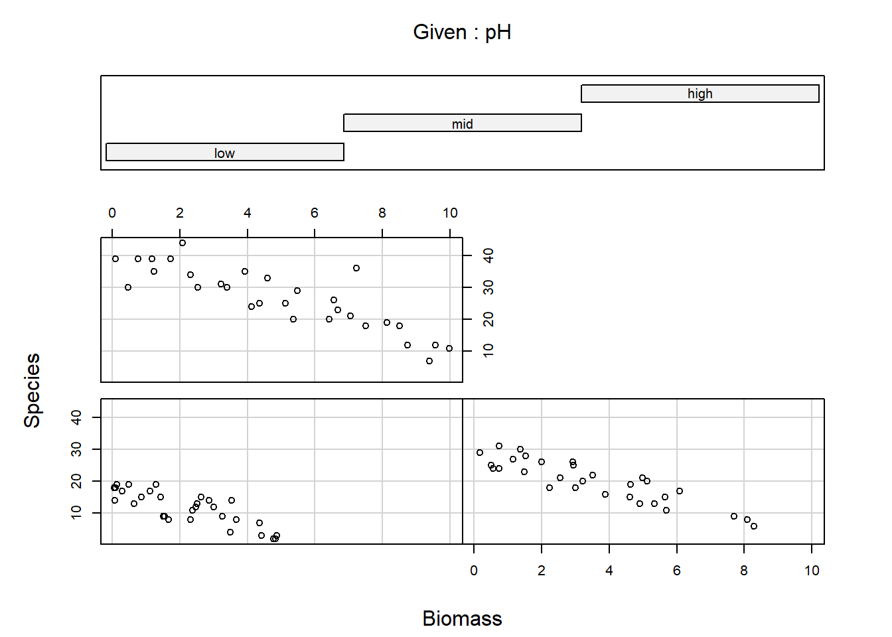

Exercise
Exercise: Poisson GLM - predicting species richness
The data for this exercise were collected during an experiment which investigated the relationship between the number of plant species and plant biomass grown in plots with 3 controlled pH treatments: low, medium and high pH. The research seeks to find out if increasing biomass has an effect on species richness, and if this effect could be modulated by pH. Therefore, Species is the response variable and pH and Biomass are explanatory variables. Because the number of species is a count (positive and integer), we will attempt to fit a Poisson distribution to these data.
1. As in previous exercises, either create a new R script (perhaps call it GLM_Poisson) or continue with your previous R script in your RStudio Project. Again, make sure you include any metadata you feel is appropriate (title, description of task, date of creation etc) and don’t forget to comment out your metadata with a # at the beginning of the line.
2. Import the data file ‘species.txt’ into R and take a look at the structure of this dataframe. Start with an initial data exploration (using pairs() and coplot()?). Do you see any imbalance of concern between the predictors? Do you foresee any problem for the model to answer the initial question?
- Hints:
- the Poisson model uses a log-link, therefore the equation of the model (the linear predictor) will predict the expected number of plant species on the log scale.
- for a corresponding data exploration it would make sense to use the log of the response.
- check that the format of pH is appropriate and that the reference level is what you want.
- restrict the plot to the variables you actually need
- an effective way of doing this is to store the names of the variables of interest in a vector
VOI<- c("Var1", "Var2", ...) - and then use the naming method for subsetting the data set
Mydata[, VOI]
 

3. To warm up, let’s start with a simple Poisson GLM (using glm) including only Biomass as a predictor.
- Hints:
- take some time to think what the appropriate response variable is!
- if in doubt, make sure to ask someone to help clear this with you.
- remember to specify the assumed distribution of the data in
glm()
4. Obtain summaries of the model output using the summary() function. Make sure you understand the mathematical and biological interpretation of the model, by writing down the complete model on paper.
5. According to this model, what would be the predicted value (by hand) on the link scale log(mu) when Biomass= 5? What would this become on the response scale, i.e. the number of species?
6. Now, specify a more useful Poisson GLM (using glm) to match the stated research questions.
7. Obtain summaries of the model output using the summary() and the ANOVA of the model.
- Which of the
drop1()oranova()functions would you choose to use if you wanted to- look at deviance components?
- explain the predictions?
- test hypotheses?
- simplify the model?
- Is the effect of the interaction significant?
8. Looking at the model summary, make sure you understand the individual components, null hypotheses, and the mathematical and biological interpretation of the different coefficients (i.e. would you be able to reconstruct and to use the model formula to make predictions? In doubt, try it and seek assistance!).
- How do you interpret the model terms?
- what does the
Interceptrepresent, and which categories does it apply to? - what does the
Biomasseffect represent, and which category does it apply to? - what does the
pHmideffect represent? - what does the
Biomass:pHmideffect represent?
- what does the
9. Any indication of overdispersion? (Hint: check residual deviance and degrees of freedom)
10. [Optional] Check for collinearity using the vif() function in the car package. What do you think?
11. Validate the model using the standard residuals diagnostic plots
12. Let’s plot the model predictions over the raw data, using predict() with the argument type= "response" to obtain the fitted values on the original (response) scale. Plot a fitted line for the relationship between number of species and biomass for each level of pH. For the sake of this exercise and to better illustrate the assumptions of the model, use the whole range of biomass(0 to 10) for every pH level. Why are the lines not straight?
13. Looking at the data and model fits, any idea why the expected species richness for the largest values of biomass tends to be biased high? How satisfied are you with the model? Have we learned anything from it, about species diversity in relation to pH and biomass?
14. (Optional) Use predict again, but this time, * obtain the fitted values on the scale of the linear predictor type= "link" * only predict for the range of observed biomass for each pH level. Plot again and compare with the previous graph: what is happening? How would you back-transform these values predicted on the link scale to plot them on the response scale again?
15. (Optional but recommended) Use predict again, but this time obtain the fitted values and their standard errors on the scale of the linear predictor. From these, calculate confidence intervals for the fitted values, and plot them together with the data, after back-transforming the fitted values and intervals on the response scale.
- Suggested approach:
- plot the raw data (one colour per pH)
- create a
data.framecalledXcontaining the data to predict for: as sequence of increasing Biomass and the pH of your choice - use
predict()with the appropriate optionstype= "link", se.fit= TRUEto obtain the fitted values on the link scale and for being able to calculate the confidence intervals later. Store in objectZ. - plot fitted values, extracted using
Z$fit, against the Biomass sequence. Do not forget to back-transform on the response scale. - plot the upper bound of the 95% CI (fitted values + 1.96*se), extracted using
Z$fitandZ$se.fit, against the Biomass sequence. Do not forget to back-transform on the response scale. - plot the lower bound of the 95% CI (fitted values - 1.96*se), extracted using
Z$fitandZ$se.fit, against the Biomass sequence. Do not forget to back-transform on the response scale. - repeat for other pH values.
End of the Poisson GLM - predicting species richness exercise